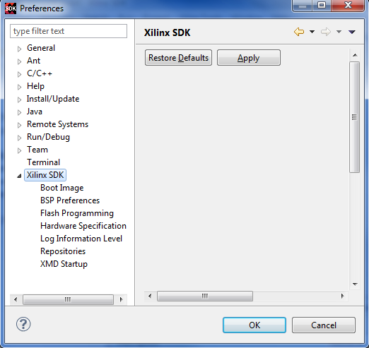

You can customize the behavior of the SDK interface in the Preferences dialog box. Select Window > Preferences to open it, and click Xilinx SDK in the preference page list.

The table below lists the preferences that can be set using the Xilinx SDK page of the Preferences dialog box.
| Preference | Description |
|---|---|
| Boot Image | The Boot Image preference page can be used to set the preferred tool for creating a Zynq boot image. It is set to bootgen as the default tool. |
| BSP Preferences | The BSP Preferences page can be used to set the level of autonomy as to when the BSP is regenerated and if an alert is listed. |
| Flash Programming | The Flash Programming preference page can be used to set the preferences for your Flash Programming downloading. When the Do not show flash device support information before programming check box is selected, SDK disables the alert message about supported Flash devices during Flash programming. |
| Hardware Specification | The Hardware Specification preference page can be used to indicate how SDK is to monitor the hardware specification files. By default, SDK always monitors the hardware specification files for changes and will automatically rebuild the necessary projects. Here you may override the default and disable monitoring. |
| Log Information Level | The Log Information Level preference page contains the threshold setting of the level of log output from SDK to the console. The Log Level defaults to Info, but can also be set to Trace, Error, or Warning. This information can be used to display activities from SDK as commands are run. |
| Repositories | The Repositories preference can be used to add, remove or change the order of software repositories in SDK. |
| XMD Startup | The XMD Startup preference page can be used to define the timeouts and port for communication between the SDK and the board. |